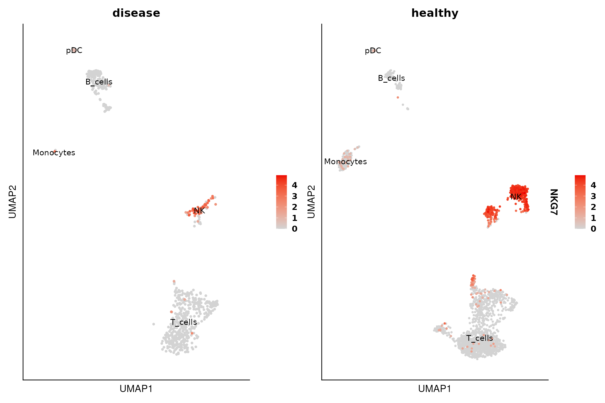

In this tutorial we compile examples on how to use the different functions available in the R package. You can refer to previous tutorial to see how to use CellBender and perform quality control and basic downstream analysis of sc/snRNA-seq. We are going to use the object generated in the section: Quality control of sc/snRNA-seq.
Libraries & Set-Up
#> 2025-07-08 09:15:06 - Using existing conda environment at: /home/runner/.venv/DOtools
#> 2025-07-08 09:15:06 - Python packages ready for DOtools!Dotplot
The DO.Dotplot function generates a plot in a similar
manner as the Dotplot function implemented in scanpy but with
additional functionalities, e.g. the visualisation of 3 variables at the
same time. For example, we can visualise the expression of a gene across
celltypes and conditions:
DO.Dotplot(Seu_object = Seu_obj,
group.by.x = "condition",
group.by.y = "annotation",
Feature = "NKG7")
#> Scale for size is already present.
#> Adding another scale for size, which will replace the existing scale.
UMAP
The DO.UMAP function facilitatesthe visualisation of
UMAP embeddings since it combines the ability to show cell groupings and
gene expression.
DO.UMAP(Seu_object = Seu_obj,
group.by = "annotation",
split.by = "condition",
FeaturePlot = TRUE,
features = "NKG7",
legend.position = "right")
Cell composition changes
As shown in the tutorial, we can also test for significant changes in cell population.
DO.CellComposition(Seu_object = Seu_obj,
assay_normalized = "RNA",
cluster_column = "annotation",
sample_column = "orig.ident",
condition_column = "condition",
transform_method = "arcsin",
n_reps = 3)
#> 2025-07-08 09:15:10 - Bootstrapping method activated with 3 simulated replicates!
#> .
#> ℹ Using the 'counts' assay as the X matrix
#> [INFO] Your data doesn't have replicates! Artificial replicates will be simulated to run scanpro.
#> [INFO] Simulation may take some minutes...
#> [INFO] Generating 3 replicates and running 100 simulations...
#> [INFO] Finished 100 simulations in 3.04 seconds
#> Using orig.ident, condition as id variables
#> Using condition as id variables
Expression of genes and continuous metadata
We can visualize the average expression of a gene in a cell type or continuous metadata information across condition with violinplots, barplots and boxplots. Additionally, we can test for significance.
p <- DO.VlnPlot(Seu_obj,
Feature = "NKG7",
group.by = "condition",
group.by.2 = "annotation",
ctrl.condition = "healthy")
#> Using group, orig.ident, annotation as id variables
#> ListTest empty, comparing every sample with each other
Seu_obj_NK <- DO.Subset(Seu_obj, ident = "annotation", ident_name = "NK")
#> Specified 'ident_name': expecting a categorical variable.
DO.BarplotWilcox(Seu_obj_NK,
group.by = "condition",
ctrl.condition = "healthy",
Feature = "NKG7",
x_label_rotation = 0)
#> Using condition, orig.ident as id variables
#> ListTest empty, comparing every sample with each other
set.seed(123)
Seu_obj$rdm_sample <- sample(rep(c("A", "B", "C"), length.out = ncol(Seu_obj)))
DO.BoxPlot(Seu_obj,
group.by = "rdm_sample",
ctrl.condition = "A",
Feature = "nCount_RNA",
step_mod = 100,
plot_sample = FALSE)
#> Using group, cluster as id variables
#> ListTest empty, comparing every sample with each other
#> Scale for fill is already present.
#> Adding another scale for fill, which will replace the existing scale.
path_file <- tempfile("dotools_plots_")
dir.create(path_file, recursive = TRUE, showWarnings = FALSE)
DO.Heatmap(Seu_obj,
features = rownames(Seu_obj)[1:10],
xticks_rotation=45,
path = path_file,
stats_x_size = 20)
#> Calculating cluster 1
#> For a (much!) faster implementation of the Wilcoxon Rank Sum Test,
#> (default method for FindMarkers) please install the presto package
#> --------------------------------------------
#> install.packages('devtools')
#> devtools::install_github('immunogenomics/presto')
#> --------------------------------------------
#> After installation of presto, Seurat will automatically use the more
#> efficient implementation (no further action necessary).
#> This message will be shown once per session
#> Calculating cluster 2
#> Calculating cluster 3
#> Calculating cluster 4
#> Calculating cluster 5
#> Calculating cluster 6
#> Calculating cluster 7
#> Calculating cluster 8
Heatmap_plot <- list.files(path = path_file, pattern = "Heatmap*\\.svg$", full.names = TRUE, recursive = TRUE)
plot(magick::image_read_svg(Heatmap_plot))
Session information
#> ─ Session info ───────────────────────────────────────────────────────────────────────────────────────────────────────
#> setting value
#> version R version 4.5.1 (2025-06-13)
#> os Ubuntu 24.04.2 LTS
#> system x86_64, linux-gnu
#> ui X11
#> language en
#> collate C.UTF-8
#> ctype C.UTF-8
#> tz UTC
#> date 2025-07-08
#> pandoc 3.1.11 @ /opt/hostedtoolcache/pandoc/3.1.11/x64/ (via rmarkdown)
#> quarto NA
#>
#> ─ Packages ───────────────────────────────────────────────────────────────────────────────────────────────────────────
#> package * version date (UTC) lib source
#> abind 1.4-8 2024-09-12 [1] RSPM
#> assertthat 0.2.1 2019-03-21 [1] RSPM
#> backports 1.5.0 2024-05-23 [1] RSPM
#> basilisk 1.20.0 2025-04-15 [1] Bioconduc~
#> basilisk.utils 1.20.0 2025-04-15 [1] Bioconduc~
#> beachmat 2.24.0 2025-04-15 [1] Bioconduc~
#> Biobase 2.68.0 2025-04-15 [1] Bioconduc~
#> BiocGenerics 0.54.0 2025-04-15 [1] Bioconduc~
#> BiocManager 1.30.26 2025-06-05 [1] RSPM
#> BiocParallel 1.42.1 2025-06-01 [1] Bioconduc~
#> BiocStyle * 2.36.0 2025-04-15 [1] Bioconduc~
#> bookdown 0.43 2025-04-15 [1] RSPM
#> broom 1.0.8 2025-03-28 [1] RSPM
#> bslib 0.9.0 2025-01-30 [1] RSPM
#> cachem 1.1.0 2024-05-16 [1] RSPM
#> car 3.1-3 2024-09-27 [1] RSPM
#> carData 3.0-5 2022-01-06 [1] RSPM
#> cli 3.6.5 2025-04-23 [1] RSPM
#> cluster 2.1.8.1 2025-03-12 [3] CRAN (R 4.5.1)
#> codetools 0.2-20 2024-03-31 [3] CRAN (R 4.5.1)
#> colorspace 2.1-1 2024-07-26 [1] RSPM
#> cowplot 1.1.3 2024-01-22 [1] RSPM
#> crayon 1.5.3 2024-06-20 [1] RSPM
#> curl 6.4.0 2025-06-22 [1] RSPM
#> data.table 1.17.6 2025-06-17 [1] RSPM
#> DelayedArray 0.34.1 2025-04-17 [1] Bioconduc~
#> DelayedMatrixStats 1.30.0 2025-04-15 [1] Bioconduc~
#> deldir 2.0-4 2024-02-28 [1] RSPM
#> desc 1.4.3 2023-12-10 [1] RSPM
#> DESeq2 1.48.1 2025-05-11 [1] Bioconduc~
#> digest 0.6.37 2024-08-19 [1] RSPM
#> dir.expiry 1.16.0 2025-04-15 [1] Bioconduc~
#> dotCall64 1.2 2024-10-04 [1] RSPM
#> DOtools * 0.4.0 2025-07-08 [1] local
#> dplyr 1.1.4 2023-11-17 [1] RSPM
#> dqrng 0.4.1 2024-05-28 [1] RSPM
#> DropletUtils 1.28.1 2025-07-06 [1] Bioconduc~
#> edgeR 4.6.2 2025-05-07 [1] Bioconduc~
#> enrichR 3.4 2025-02-02 [1] RSPM
#> evaluate 1.0.4 2025-06-18 [1] RSPM
#> farver 2.1.2 2024-05-13 [1] RSPM
#> fastDummies 1.7.5 2025-01-20 [1] RSPM
#> fastmap 1.2.0 2024-05-15 [1] RSPM
#> filelock 1.0.3 2023-12-11 [1] RSPM
#> fitdistrplus 1.2-4 2025-07-03 [1] RSPM
#> forcats 1.0.0 2023-01-29 [1] RSPM
#> Formula 1.2-5 2023-02-24 [1] RSPM
#> fs 1.6.6 2025-04-12 [1] RSPM
#> future 1.58.0 2025-06-05 [1] RSPM
#> future.apply 1.20.0 2025-06-06 [1] RSPM
#> generics 0.1.4 2025-05-09 [1] RSPM
#> GenomeInfoDb 1.44.0 2025-04-15 [1] Bioconduc~
#> GenomeInfoDbData 1.2.14 2025-06-16 [1] Bioconductor
#> GenomicRanges 1.60.0 2025-04-15 [1] Bioconduc~
#> ggalluvial 0.12.5 2023-02-22 [1] RSPM
#> ggcorrplot 0.1.4.1 2023-09-05 [1] RSPM
#> ggplot2 3.5.2 2025-04-09 [1] RSPM
#> ggpubr 0.6.1 2025-06-27 [1] RSPM
#> ggrepel 0.9.6 2024-09-07 [1] RSPM
#> ggridges 0.5.6 2024-01-23 [1] RSPM
#> ggsignif 0.6.4 2022-10-13 [1] RSPM
#> ggtext 0.1.2 2022-09-16 [1] RSPM
#> globals 0.18.0 2025-05-08 [1] RSPM
#> glue 1.8.0 2024-09-30 [1] RSPM
#> goftest 1.2-3 2021-10-07 [1] RSPM
#> gridExtra 2.3 2017-09-09 [1] RSPM
#> gridtext 0.1.5 2022-09-16 [1] RSPM
#> gtable 0.3.6 2024-10-25 [1] RSPM
#> h5mread 1.0.1 2025-05-21 [1] Bioconduc~
#> HDF5Array 1.36.0 2025-04-15 [1] Bioconduc~
#> hms 1.1.3 2023-03-21 [1] RSPM
#> htmltools 0.5.8.1 2024-04-04 [1] RSPM
#> htmlwidgets 1.6.4 2023-12-06 [1] RSPM
#> httpuv 1.6.16 2025-04-16 [1] RSPM
#> httr 1.4.7 2023-08-15 [1] RSPM
#> ica 1.0-3 2022-07-08 [1] RSPM
#> igraph 2.1.4 2025-01-23 [1] RSPM
#> IRanges 2.42.0 2025-04-15 [1] Bioconduc~
#> irlba 2.3.5.1 2022-10-03 [1] RSPM
#> jquerylib 0.1.4 2021-04-26 [1] RSPM
#> jsonlite 2.0.0 2025-03-27 [1] RSPM
#> KernSmooth 2.23-26 2025-01-01 [3] CRAN (R 4.5.1)
#> knitr 1.50 2025-03-16 [1] RSPM
#> labeling 0.4.3 2023-08-29 [1] RSPM
#> later 1.4.2 2025-04-08 [1] RSPM
#> lattice 0.22-7 2025-04-02 [3] CRAN (R 4.5.1)
#> lazyeval 0.2.2 2019-03-15 [1] RSPM
#> lifecycle 1.0.4 2023-11-07 [1] RSPM
#> limma 3.64.1 2025-05-25 [1] Bioconduc~
#> listenv 0.9.1 2024-01-29 [1] RSPM
#> lmtest 0.9-40 2022-03-21 [1] RSPM
#> locfit 1.5-9.12 2025-03-05 [1] RSPM
#> magick 2.8.7 2025-06-06 [1] RSPM
#> magrittr 2.0.3 2022-03-30 [1] RSPM
#> MASS 7.3-65 2025-02-28 [3] CRAN (R 4.5.1)
#> Matrix 1.7-3 2025-03-11 [3] CRAN (R 4.5.1)
#> MatrixGenerics 1.20.0 2025-04-15 [1] Bioconduc~
#> matrixStats 1.5.0 2025-01-07 [1] RSPM
#> mime 0.13 2025-03-17 [1] RSPM
#> miniUI 0.1.2 2025-04-17 [1] RSPM
#> nlme 3.1-168 2025-03-31 [3] CRAN (R 4.5.1)
#> openxlsx 4.2.8 2025-01-25 [1] RSPM
#> parallelly 1.45.0 2025-06-02 [1] RSPM
#> patchwork 1.3.1 2025-06-21 [1] RSPM
#> pbapply 1.7-2 2023-06-27 [1] RSPM
#> pillar 1.11.0 2025-07-04 [1] RSPM
#> pkgconfig 2.0.3 2019-09-22 [1] RSPM
#> pkgdown 2.1.3 2025-05-25 [1] any (@2.1.3)
#> plotly 4.11.0 2025-06-19 [1] RSPM
#> plyr 1.8.9 2023-10-02 [1] RSPM
#> png 0.1-8 2022-11-29 [1] RSPM
#> polyclip 1.10-7 2024-07-23 [1] RSPM
#> prettyunits 1.2.0 2023-09-24 [1] RSPM
#> progress 1.2.3 2023-12-06 [1] RSPM
#> progressr 0.15.1 2024-11-22 [1] RSPM
#> promises 1.3.3 2025-05-29 [1] RSPM
#> purrr 1.0.4 2025-02-05 [1] RSPM
#> R.methodsS3 1.8.2 2022-06-13 [1] RSPM
#> R.oo 1.27.1 2025-05-02 [1] RSPM
#> R.utils 2.13.0 2025-02-24 [1] RSPM
#> R6 2.6.1 2025-02-15 [1] RSPM
#> ragg 1.4.0 2025-04-10 [1] RSPM
#> RANN 2.6.2 2024-08-25 [1] RSPM
#> RColorBrewer 1.1-3 2022-04-03 [1] RSPM
#> Rcpp 1.1.0 2025-07-02 [1] RSPM
#> RcppAnnoy 0.0.22 2024-01-23 [1] RSPM
#> RcppHNSW 0.6.0 2024-02-04 [1] RSPM
#> reshape2 1.4.4 2020-04-09 [1] RSPM
#> reticulate 1.42.0 2025-03-25 [1] RSPM
#> rhdf5 2.52.1 2025-06-08 [1] Bioconduc~
#> rhdf5filters 1.20.0 2025-04-15 [1] Bioconduc~
#> Rhdf5lib 1.30.0 2025-04-15 [1] Bioconduc~
#> rjson 0.2.23 2024-09-16 [1] RSPM
#> rlang 1.1.6 2025-04-11 [1] RSPM
#> rmarkdown 2.29 2024-11-04 [1] RSPM
#> ROCR 1.0-11 2020-05-02 [1] RSPM
#> RSpectra 0.16-2 2024-07-18 [1] RSPM
#> rstatix 0.7.2 2023-02-01 [1] RSPM
#> rsvg 2.6.2 2025-03-23 [1] RSPM
#> Rtsne 0.17 2023-12-07 [1] RSPM
#> S4Arrays 1.8.1 2025-06-01 [1] Bioconduc~
#> S4Vectors 0.46.0 2025-04-15 [1] Bioconduc~
#> sass 0.4.10 2025-04-11 [1] RSPM
#> scales 1.4.0 2025-04-24 [1] RSPM
#> scattermore 1.2 2023-06-12 [1] RSPM
#> SCpubr 2.0.2 2023-10-11 [1] RSPM
#> sctransform 0.4.2 2025-04-30 [1] RSPM
#> scuttle 1.18.0 2025-04-15 [1] Bioconduc~
#> sessioninfo 1.2.3 2025-02-05 [1] any (@1.2.3)
#> Seurat 5.3.0 2025-04-23 [1] RSPM
#> SeuratObject 5.1.0 2025-04-22 [1] RSPM
#> shiny 1.11.1 2025-07-03 [1] RSPM
#> SingleCellExperiment 1.30.1 2025-05-07 [1] Bioconduc~
#> sp 2.2-0 2025-02-01 [1] RSPM
#> spam 2.11-1 2025-01-20 [1] RSPM
#> SparseArray 1.8.0 2025-04-15 [1] Bioconduc~
#> sparseMatrixStats 1.20.0 2025-04-15 [1] Bioconduc~
#> spatstat.data 3.1-6 2025-03-17 [1] RSPM
#> spatstat.explore 3.4-3 2025-05-21 [1] RSPM
#> spatstat.geom 3.4-1 2025-05-20 [1] RSPM
#> spatstat.random 3.4-1 2025-05-20 [1] RSPM
#> spatstat.sparse 3.1-0 2024-06-21 [1] RSPM
#> spatstat.univar 3.1-3 2025-05-08 [1] RSPM
#> spatstat.utils 3.1-4 2025-05-15 [1] RSPM
#> statmod 1.5.0 2023-01-06 [1] RSPM
#> stringi 1.8.7 2025-03-27 [1] RSPM
#> stringr 1.5.1 2023-11-14 [1] RSPM
#> SummarizedExperiment 1.38.1 2025-04-30 [1] Bioconduc~
#> survival 3.8-3 2024-12-17 [3] CRAN (R 4.5.1)
#> systemfonts 1.2.3 2025-04-30 [1] RSPM
#> tensor 1.5.1 2025-06-17 [1] RSPM
#> textshaping 1.0.1 2025-05-01 [1] RSPM
#> tibble 3.3.0 2025-06-08 [1] RSPM
#> tidyr 1.3.1 2024-01-24 [1] RSPM
#> tidyselect 1.2.1 2024-03-11 [1] RSPM
#> tidyverse 2.0.0 2023-02-22 [1] RSPM
#> UCSC.utils 1.4.0 2025-04-15 [1] Bioconduc~
#> uwot 0.2.3 2025-02-24 [1] RSPM
#> vctrs 0.6.5 2023-12-01 [1] RSPM
#> viridis 0.6.5 2024-01-29 [1] RSPM
#> viridisLite 0.4.2 2023-05-02 [1] RSPM
#> withr 3.0.2 2024-10-28 [1] RSPM
#> WriteXLS 6.8.0 2025-05-22 [1] RSPM
#> xfun 0.52 2025-04-02 [1] RSPM
#> xml2 1.3.8 2025-03-14 [1] RSPM
#> xtable 1.8-4 2019-04-21 [1] RSPM
#> XVector 0.48.0 2025-04-15 [1] Bioconduc~
#> yaml 2.3.10 2024-07-26 [1] RSPM
#> zellkonverter 1.18.0 2025-04-15 [1] Bioconduc~
#> zip 2.3.3 2025-05-13 [1] RSPM
#> zoo 1.8-14 2025-04-10 [1] RSPM
#>
#> [1] /home/runner/work/_temp/Library
#> [2] /opt/R/4.5.1/lib/R/site-library
#> [3] /opt/R/4.5.1/lib/R/library
#> * ── Packages attached to the search path.
#>
#> ─ Python configuration ───────────────────────────────────────────────────────────────────────────────────────────────
#> python: /home/runner/.venv/DOtools/bin/python
#> libpython: /home/runner/.venv/DOtools/lib/libpython3.11.so
#> pythonhome: /home/runner/.venv/DOtools:/home/runner/.venv/DOtools
#> version: 3.11.13 (main, Jun 5 2025, 13:12:00) [GCC 11.2.0]
#> numpy: /home/runner/.venv/DOtools/lib/python3.11/site-packages/numpy
#> numpy_version: 1.26.4
#>
#> NOTE: Python version was forced by use_python() function
#>
#> ──────────────────────────────────────────────────────────────────────────────────────────────────────────────────────